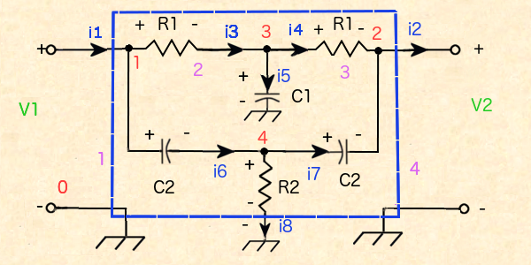
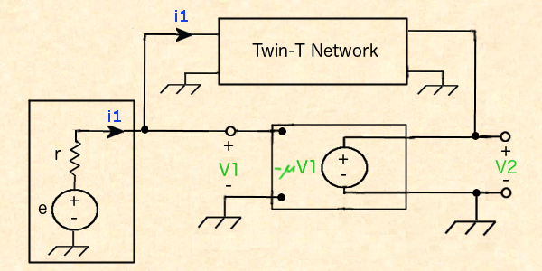
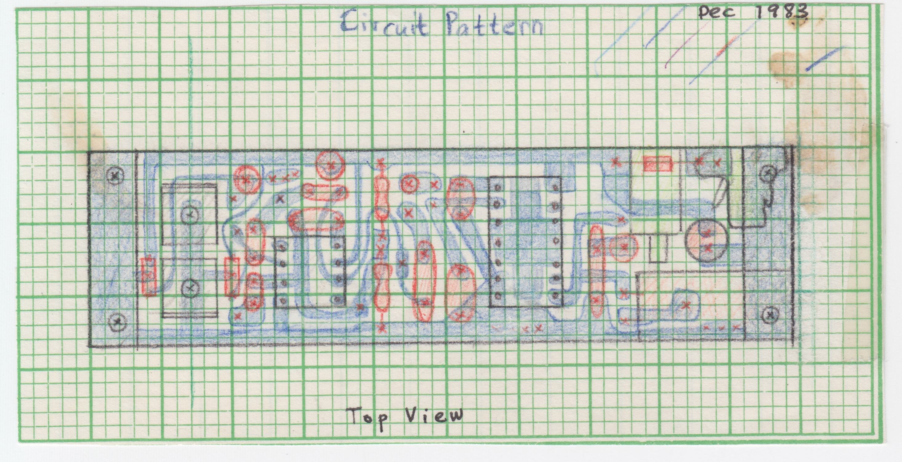

Introduction
This circuit is based on the article Percussion Instrument Synthesizer by Forrest M. Mims, Popular Electronics, March, 1976, pgs. 90 - 102. which describes an audio amplifier with a twin-T notch filter in the feedback loop,
The R-C network gives a sharp peak at a single audio frequency at which feedback occurs. Disturbing the touch plate introduces a transient which starts a damped oscillation "ringing". I've added a Hall effect sensor on the input instead of a touch plate to inject the transient, and an audio power amplifer on the output.
Analyzing the RC Network
Let's analyze the network in isolation and add the amplifier and input later.
Kirchhoff's Laws
Kirchoff's Laws can be derived from Maxwell's equations for discrete circuit elements. Kirchoff's current law assumes that charge is constant in time at a given node: $\frac{ \partial Q(t) }{ \partial t} = 0$. Kirchoff's voltage law assumes magnetic field density is constant in time within a closed path: $\frac{ \partial B(t) }{ \partial t} = 0$. So they should be exact for DC and fairly accurate for lower frequency AC.
First apply Kirchhoff's current law on nodes 1-4 gives- $i_1 - i_3 - i_6 = 0$
- $i_4 - i_2 + i_7 = 0$
- $i_3 - i_4 - i_5 = 0$
- $i_6 - i_7 - i_8 = 0$
Recall the convention that currents flowing into the node are taken as positive.
First an aside, recall the Laplace transform of a function $f$ is defined to be $\mathscr{L}\{ f(t) \} = \int_0^{\infty} f(t) e^{-st} dt$ and has the property $\mathscr{L}\{ f'(t) \} = s \mathscr{L} \{ f(t) \} - f(0)$ and that the transform is linear.
Recall that the voltage across a resistor is $V = iR$. A capacitor has the equation $\frac{d V}{d t} = {1 \over C} i$ since capacitance is defined by $CV = q$. Then we have $$\mathscr{L} \{ V(t) \} = {1 \over s C} \mathscr{L} \{ i(t) \}$$ if we assume the initial voltage $V = 0$ at $t = 0$
Now we apply Kirchhoff's voltage law on the meshes 1-4. But first we apply the Laplace transform to all voltage terms in the loop using linearity and assuming initial currents and voltages are zero. For simplicity of notation, let's use $i(t)$ to denote $\mathscr{L} \{ i(t) \}$, and $V(t)$ to denote $\mathscr{L} \{ V(t) \}$.
- $R_1 i_3 + \frac{1}{s C_1} i_5 - V_1 = 0$
- $\frac{1}{s C_2} i_6 + R_2 i_8 - V_1 = 0$
- $\frac{1}{s C_1} i_5 - V_2 - i_4 R_1 = 0$
- $R_2 i_8 - V_2 - \frac{1}{s C_2} i_7 = 0$
Solving the Equations
Now we'll solve the equations by substitution. Mesh equation 1 gives $$i_5 = (V_1 - R_1 i_3) s C_1$$ Substituting $i_5$ into node equation 3 gives $$\text{ * } i_3 - i_4 - (V_1 - R_1 i_3) s C_1 = 0$$ Substituting $i_5$ into mesh equation 3 gives $$(V_1 - R_1 i_3) - V_2 - i_4 R_1 = 0$$ then $$i_4 = \frac{V_1 - R_1 i_3 - V_2}{R_1}$$ Substituting $i_4$ into equation * above gives, after rearrangement, $$i_3 = \frac{ \frac{ V_1 - V_2}{R_1} + s C_1 V_1 }{ 2 + s C_1 R_1}$$ Now solve mesh equation 4 for $i_8$ to get $$i_8 = \frac{V_2 + \frac{i_7}{s C_2} }{R_2}$$ Substitute $i_8$ into mesh equation 2 to get after rearrangement, $$i_7 = (V_1 - V_2 - \frac{i_6}{s C_2}) s C_2$$ Substitute $i_8$ into node equation 2 to get $$\text{ ** } i_6 - i_7 - (\frac{V_2 + \frac{i_7}{s C_2}}{R_2}) = 0$$ Substitute $i_7$ into equation ** above to get after some rearrangement, $$i_6 = \frac{ (V_1 - V_2) s C_2 + \frac{V_1}{R_2}}{2 + \frac{1}{s C_2 R_2}}$$ Finally, use node equation 1 to give $$i_1 = \frac{ \frac{ V_1 - V_2}{R_1} + s C_1 V_1 }{ 2 + s C_1 R_1} + \frac{ (V_1 - V_2) s C_2 + \frac{V_1}{R_2}}{2 + \frac{1}{s C_2 R_2}}$$ This is almost what we need because it relates input voltage $V_1$ to output voltage $V_2$ given only input current $i_1$.
Analyzing the Amplifier Plus RC Network
The Transfer Function H(s)
Returning to our complete circuit, we draw it using the twin-T notch filter block just analyzed, an ideal operational amplifer, and a voltage source. The ideal OpAmp has $\infty$ input impedance, $0$ output impedance, perfect linearity and gain $\mu \rightarrow \infty$ It's equation is $V_{o} = -\mu V_{i}$. The voltage source has internal resistance $r$.

By Kirchhoff's voltage law, recalling we are using the Laplace transforms of voltage and current here, the mesh equation for the input is $$V_1 = -e + i_1 r = 0$$ Now lets eliminate $i_1$ and $V_1$ in the Twin-T equation using $$i_1 = \frac{e-V_1}{r}$$ $$V_1 = -\frac{V_2}{\mu}$$ giving $$\frac{e + \frac{V_2}{\mu} }{r} =$$ $$\frac{ \frac{ -\frac{V_2}{\mu} - V_2 }{R_1} + s C_1(-\frac{V_2}{\mu}) }{ 2 + s C_1 R_1} + \frac{ (-\frac{V_2}{\mu} - V_2) s C_2 + \frac{ -\frac{V_2}{\mu} }{R_2} }{2 + \frac{1}{s C_2 R_2}}$$ But the ideal op amp open loop gain $\mu$ is very high, so let $\mu \rightarrow \infty$ giving $$ \frac{e}{r} = \frac{ \frac{ -V_2 }{R_1} }{ 2 + s C_1 R_1 } + \frac{ (- V_2) s C_2 }{2 + \frac{1}{s C_2 R_2}}$$ Now let's put over a common denomiator, and invert to get $$ \frac{ V_2 }{ e } = -r \frac{ (2 + s C_1 R_1)(2 + \frac{1}{s C_2 R_2}) } { \frac{1}{R_1} (2 + \frac{1}{s C_2 R_2}) + s C_2 (2 + s C_1 R_1) } $$ After more rearranging we get the transfer function of our circuit, $$ H(s) = -r \frac{ (2 + s C_1 R_1) (2 s C_2 R_2 + 1)(\frac{ R_1 }{R_1 C_1 R_2 C_2 R_1 C_2}) } { s^3 + (\frac{2}{R_1 C_1})s^2 + (\frac{2}{R_1 C_1 R_1 C_2})s + (\frac{1}{R_1 C_1 R_2 C_2 R_1 C_2}) } $$ where $V_2(s) = H(s) e(s)$Ringing the Bell
To ring the bell in operation, one applies a sharp impulse to the input. To approximate this, set $e(t) = \delta(t)$, the Dirac delta function. Then $e(s) = \mathscr{L}\{ \delta(t) \} = 1$ The solution will be $V_2(t) = \mathscr{L}^{-1}\{ H(s) \}$
Time Domain Solution
Inverting the Laplace Transform
From complex analysis, for $t \ge 0$, the inverse Laplace transform for $Re(s) \gt \sigma$ is given by $$h(t) = \mathscr{L}^{-1}\{ H(s) \} = \sum \{ \text{ Residues of } e^{st} H(s) \text{ at each of its poles } \}$$ since $H(s)$ is analytic on $\mathbb{C}$ except at a finite number of poles, in particular, analytic on the half plane $\{ s | Re(s) \gt \sigma \}$ and $| H(s) | \le \frac{ M }{|z|} \forall |z| \ge R$ for constants $M \gt 0$ and $R \gt 0$ Recall for a simple pole $s_0$ the residue is $$Res( H(s), s = s_0 ) = lim_{s \rightarrow s_0} (s - s_0) H(s)$$ If we write $H(s) = \frac{N(s)}{D(s)}$, the roots of the cubic $D(s) = s^3 + a_2 s^2 + a_1 s + a_0 = 0$ are the poles of $H(s)$ where $$a_2 = \frac{2}{R_1 C_1}, \quad a_1 = \frac{2}{R_1 C_1 R_1 C_2}, \quad a_0 = \frac{1}{R_1 C_1 R_1 C_2 R_2 C_2}$$ and let the roots be $s_1, s_2, s_3$ Assuming the roots are all distinct, we have the solution $$h(t) = lim_{s \rightarrow s_1} {N(s) (s - s_1) e^{st} \over (s - s_1)(s - s_1)(s - s_1)} + $$ $$ lim_{s \rightarrow s_2} {N(s) (s - s_2) e^{st} \over (s - s_2)(s - s_2)(s - s_2)} + $$ $$ lim_{s \rightarrow s_3} {N(s) (s - s_3) e^{st} \over (s - s_3)(s - s_3)(s - s_3)}$$ or $$h(t) = $$ $${N(s_1) e^{s_1 t} \over (s_1 - s_2)(s_1 - s_3)} +$$ $${N(s_2) e^{s_2 t} \over (s_2 - s_1)(s_2 - s_3)} +$$ $${N(s_3) e^{s_3 t} \over (s_3 - s_1)(s_3 - s_2)}$$ Only the general form of the solution will concern us, $$V_2(t) = k_1 e^{s_1 t} + k_2 e^{s_2 t}+ k_3 e^{s_3 t}$$ That is we don't need to know the exact amplitude of the voltage, but only the frequencies of its sinusoidal components, or the relative amplitiude of its exponential solutions, if any. Or problem is then to find the general roots of the cubic equation.
Cubic Equation Solution
From classical algebra, the roots of the cubic $s^3 + a_2 s^2 + a_1 s + a_0 = 0$ are given by the following formula, Let $Q \equiv \frac{ 3 a_1 - a_2^2 }{ 9 }$ and $R \equiv \frac{ 9 a_2 a_1 - 27 a_0 - 2 a_2^3 }{ 54 }$ Let the discriminant be $D = Q^3 + R^2$ Let $S \equiv \sqrt[3]{R + \sqrt{ D }}$ and $T \equiv \sqrt[3]{R - \sqrt{ D }}$ Then the roots are $$s_1 = -\frac{1}{3} a_2 + (S + T)$$ $$s_2 = -\frac{1}{3} a_2 - \frac{1}{2} (S + T) + \frac{1}{2} i \sqrt{3} (S - T)$$ $$s_3 = -\frac{1}{3} a_2 - \frac{1}{2} (S + T) - \frac{1}{2} i \sqrt{3} (S - T)$$
If $D = 0$ all roots are real and at least two are equal, and if $D \lt 0$ all roots are real and unequal. The solutions in this case would be of the form $k e^{ \pm u t}$, either growing exponential solutions (output increasing until limited by the circuit?) or decaying exponential solutions (maybe shows up as a click?). I'm not sure about the existence of these.
If $D \gt 0$ we have one real root and a complex conjugate pair of roots $s_1 = \gamma$, $s_2 = u + v i$, $s_3 = u - v i$ which would give us one solution of the form $k e^{ \gamma t}$ as above and two solutions $\pm k e^{ ut } sin( vt )$.
Conditions for Damped Oscillations
Since our cubic has real coefficients, if $Q \gt 0$ then $D = Q^3 + R^2 \gt 0$. But $$Q = 3 \left( \frac{2}{R_1^2 C_1 C_2} \right) - {\left( \frac{2}{R_1 C_1}\right)}^2 =$$ $$ \frac{ 6 C_1 - 4 C_2}{9 R_1^2 C_1^2 C_2} \gt 0$$ iff $3 C_1 \gt 2 C_2$ since the denominator > 0.
Resonant Frequency at the Edge of Oscillation
Recall Newton's formulas for the coefficients in terms of the roots, $$s_1 + s_2 + s_3 = -a_2$$ $$s_1 s_2 + s_1 s_3 + s_2 s_3 = a_1$$ $$s_1 s_2 s_1 s_3 = -a_0$$
Then multiplying out the roots gives $$-a_2 = \gamma + u + i v + u - i v = \gamma + 2u$$ $$a_1 = \gamma (u + i v) + \gamma (u - iv) + (u + iv)(u - iv)$$ $$ = 2 \gamma u + (u^2 + v^2)$$ $$-a_0 = \gamma (u+iv)(u-iv) = \gamma (u^2 + v^2)$$
On the cusp of steady oscillation, $u = 0$ and we can simplfy the equations to $$-a_2 = \gamma$$ $$a_1 = v^2$$ $$-a_0 = \gamma v^2$$
Combining the equations gives $$a_0 = a_2 a_1$$ or $$\frac{1}{R_2 C_2} = \frac{4}{R_1 C_1}$$
The frequency of the oscillating solution is $$f = \frac{v}{2 \pi} = \frac{ \sqrt{a_1} }{2 \pi} = \frac{1}{2 \pi R_1} \sqrt{ \frac{2}{C_1 C_2} }$$ and the transient term decays as $$k e^{ -\frac{2}{R_1 C_1} t}$$
For this design, pick the capacitances to satisfy $$3 C_1 \gt 2 C_2$$ pick a small value for $$R_1 C_1$$ pick a frequency $f$ which gives $R_1$ as $$R_1 = \frac{1}{2 \pi f} \sqrt{ \frac{2}{C_1 C_2}}$$ finally $R_2$ is $$R_2 = R_1 \left( \frac{C_1}{4 C_2} \right)$$
Circuit Schematic
NOTES:
- The dual 100K resistors connected to pin 3 of LM308 provide a floating ground for this op amp.
- You'll get excessive current drain unless the 330pF capacitor is connected to pin 2 of LM380N. The chip will actually heat up! Parasitic oscillation in the ultrasound range, perhaps?
- The 150K resistor at the output of the LM308 isolates the two amplifiers. Again, hissing and high current drain happened when the two amplifiers were directly connected.
- High current drain also occurred when pin 12 of the LM380N was grounded. I don't know the reason.
- Quiescent power drain is about 7mA
Operation
- Turn the coarse and fine duration adjustment potentiometers clockwise as far as they will go. There will be a continuous tone.
- Adjust the pitch.
- Adjust the loudness. Not too loud or the mini speaker will saturate and the tone will sound harsh.
- Rotate the coarse adjust clockwise until oscillation stops, the clockwise until it barely begins again.
- Rotate the fine adjust counterclockwise to set the duration of the bell tone, while ringing the bell with the push button switch.
- You might have to tweak all the pots for best results.
- Use a fresh 9V battery.
Construction
The electronic bell simulator is enclosed in a small aluminum chassis box 4cm X 5cm X 10cm to fit comfortably in the hand.
Mount the circuit on a single-sided fiberglass-epoxy circuit board. Make the ground paths wide for circuit stability and ground to the chassis. Wiring is #26 stranded Cu wire. I plotted speaker holes on polar coordinate graph paper which I used as a template for drilling.
The moving parts of the Hall effect sensor switch came from brass stock and a disassebled push button switch. Lubricate with vacuum grease or plumber's grease.
Lay out the PC board pattern on a sheet of graph paper in colored pencil. Tape to the copper foil side of the circuit board and use an awl to make indentations at the positions of the holes. Draw circuit layout by hand on the Cu foil with a resist pen. Correct excess resist with a dissecting needle.

Keep all connections short as the circuit is very sensitive.
Lettering is rub-on stencil, protected by clear-seal transparent plastic adhesive film. The box is polished with fine sandpaper and steel wool.